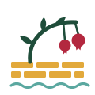
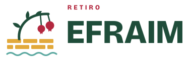
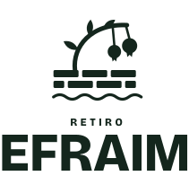
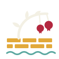

<title>Retiro Efraim</title>
<meta name="claude:viewport-fit-sides" content="cover">
<link rel="preconnect" href="https://fonts.googleapis.com">
<link rel="preconnect" href="https://fonts.gstatic.com" crossorigin>
<link rel="stylesheet" href="https://fonts.googleapis.com/css2?family=Bricolage+Grotesque:opsz,wght@12..96,400;12..96,600;12..96,800&family=Newsreader:ital,opsz,wght@0,6..72,400;1,6..72,400;1,6..72,500&display=swap">
<style>
/* Layout: manual de marca em faixas horizontais; a primeira em Videira abre com o logo negativo e o versículo-chave. */
:root {
  --videira: #1F4D3A; --roma: #B3283F; --trigo: #E2A93B; --fonte: #5BA8A0;
  --linho: #EEF0E2; --tinta: #14261D;
  --bg: var(--linho); --fg: var(--tinta); --muted: #4A5E52; --line: #CDD3BE; --surface: #F7F8F0;
  --heading: var(--videira); --accent: var(--roma);
  --display: "Bricolage Grotesque", "Arial Narrow", system-ui, sans-serif;
  --text: "Newsreader", Georgia, "Times New Roman", serif;
}
@media (prefers-color-scheme: dark) { :root:not([data-theme="light"]) {
  --bg: #101E17; --fg: #E6E9DA; --muted: #9DB0A3; --line: #2A3F33; --surface: #17291F;
  --heading: #E6E9DA; --accent: #E0566B; color-scheme: dark } }
:root[data-theme="dark"] {
  --bg: #101E17; --fg: #E6E9DA; --muted: #9DB0A3; --line: #2A3F33; --surface: #17291F;
  --heading: #E6E9DA; --accent: #E0566B; color-scheme: dark }

* { box-sizing: border-box }
body { background: var(--bg); color: var(--fg); font: 400 1.125rem/1.6 var(--text) }
.wrap { max-width: 1080px; margin: 0 auto; padding-left: max(16px, env(safe-area-inset-left, 0px)); padding-right: max(16px, env(safe-area-inset-right, 0px)) }
h1, h2, h3 { font-family: var(--display); color: var(--heading); text-wrap: balance; margin: 0 }
h2 { font-weight: 800; font-size: clamp(1.9rem, 4vw, 2.75rem); line-height: 1.05; letter-spacing: -0.01em }
h3 { font-weight: 600; font-size: 1.15rem }
p { margin: 0; max-width: 62ch }
.label { font: 600 0.75rem/1 var(--display); letter-spacing: 0.22em; text-transform: uppercase; color: var(--accent) }
img { display: block }

/* Abertura */
.hero { background: #1F4D3A; color: #EEF0E2 }
.hero .wrap { padding-block: clamp(48px, 9vw, 104px); display: grid; grid-template-columns: 1.15fr 1fr; gap: clamp(32px, 6vw, 72px); align-items: center }
.hero img { width: 100%; max-width: 520px }
.hero blockquote { margin: 0; display: grid; gap: 14px; border-left: 2px solid #E2A93B; padding-left: 22px }
.hero blockquote p { font: italic 400 clamp(1.3rem, 2.4vw, 1.65rem)/1.4 var(--text) }
.hero cite { font: 600 0.75rem/1 var(--display); letter-spacing: 0.2em; text-transform: uppercase; font-style: normal; color: #E2A93B }

section { padding-block: clamp(56px, 8vw, 96px); border-top: 1px solid var(--line) }
section:first-of-type { border-top: 0 }
.head { display: grid; gap: 12px; margin-bottom: 40px }
.head p { color: var(--muted) }

/* Conceito */
.anatomy { display: grid; grid-template-columns: minmax(0, 300px) 1fr; gap: 48px; align-items: center }
.anatomy figure { margin: 0; background: #EEF0E2; border-radius: 4px; padding: 20px }
.parts { display: grid; grid-template-columns: repeat(2, minmax(0, 1fr)); gap: 28px 32px; margin: 0; padding: 0; list-style: none }
.parts li { display: grid; gap: 6px; padding-top: 14px; border-top: 3px solid var(--c) }
.parts strong { font: 800 1.1rem/1.2 var(--display); color: var(--heading) }
.parts span { color: var(--muted); font-size: 1rem }
.parts em { font-size: 0.95rem; color: var(--muted) }

/* Versões */
.versions { display: grid; grid-template-columns: repeat(2, minmax(0, 1fr)); gap: 16px }
.tile { border-radius: 4px; padding: clamp(24px, 5vw, 48px); display: grid; gap: 28px; align-content: space-between; min-height: 240px }
.tile img { max-height: 120px; width: auto; max-width: 100% }
.tile.wide { grid-column: span 2 }
.tile.wide img { max-height: 110px }
.tile small { font: 600 0.72rem/1.3 var(--display); letter-spacing: 0.14em; text-transform: uppercase; opacity: .75 }
.on-linho { background: #EEF0E2; color: #14261D; box-shadow: inset 0 0 0 1px var(--line) }
.on-videira { background: #1F4D3A; color: #EEF0E2 }
.on-trigo { background: #E2A93B; color: #14261D }
.on-tinta { background: #14261D; color: #EEF0E2 }

/* Cores */
.swatches { display: grid; grid-template-columns: repeat(6, minmax(0, 1fr)); gap: 12px }
.sw { display: grid; gap: 10px }
.chip { aspect-ratio: 3 / 4; max-width: 100%; border-radius: 4px; background: var(--c); box-shadow: inset 0 0 0 1px rgba(20, 38, 29, .12) }
.sw b { font: 800 1rem/1.1 var(--display); color: var(--heading) }
.sw code { font: 400 0.82rem/1.5 ui-monospace, "SF Mono", Menlo, monospace; color: var(--muted); font-variant-numeric: tabular-nums }
.sw span { font-size: 0.92rem; color: var(--muted); line-height: 1.35 }
.ratio { display: flex; height: 18px; border-radius: 3px; overflow: hidden; margin-top: 28px }
.ratio div { background: var(--c); flex: var(--f) }
.ratio-legend { font: 400 0.9rem/1.4 var(--text); color: var(--muted); margin-top: 10px }

/* Tipografia */
.type { display: grid; grid-template-columns: repeat(2, minmax(0, 1fr)); gap: 16px }
.spec { background: var(--surface); border-radius: 4px; padding: 32px; display: grid; gap: 18px; align-content: start; min-width: 0 }
.spec .big { font: 800 clamp(3.2rem, 8vw, 5.5rem)/0.95 var(--display); color: var(--heading); letter-spacing: -0.01em; overflow-wrap: anywhere }
.spec .bigserif { font: italic 400 clamp(3rem, 7vw, 5rem)/1 var(--text); color: var(--heading) }
.spec dl { display: grid; grid-template-columns: auto 1fr; gap: 6px 16px; margin: 0; font-size: 0.95rem }
.spec dt { font: 600 0.72rem/1.9 var(--display); letter-spacing: 0.14em; text-transform: uppercase; color: var(--muted) }
.spec dd { margin: 0 }
.sample { margin-top: 16px; background: var(--surface); border-radius: 4px; padding: clamp(24px, 5vw, 48px); display: grid; gap: 14px }
.sample .kicker { font: 600 0.8rem/1 var(--display); letter-spacing: 0.3em; text-transform: uppercase; color: var(--accent) }
.sample .t { font: 800 clamp(2rem, 5vw, 3.4rem)/1 var(--display); color: var(--heading) }
.sample .v { font: italic 400 1.25rem/1.5 var(--text) }

/* Aplicações */
.apps { display: grid; grid-template-columns: repeat(3, minmax(0, 1fr)); gap: 16px }
.app { display: grid; gap: 12px; align-content: start }
.app .stage { border-radius: 4px; background: var(--surface); aspect-ratio: 1; max-width: 100%; display: grid; place-items: center; padding: 20px; overflow: hidden }
.app p { font-size: 0.95rem; color: var(--muted) }

.post { width: 86%; aspect-ratio: 1; max-width: 100%; background: #1F4D3A; color: #EEF0E2; display: grid; grid-template-rows: auto 1fr auto; padding: 8%; position: relative; overflow: hidden }
.post .k { font: 600 clamp(0.5rem, 1.4vw, 0.7rem)/1 var(--display); letter-spacing: 0.3em; color: #E2A93B }
.post .h { font: 800 clamp(1.4rem, 4vw, 2.4rem)/0.95 var(--display); align-self: center }
.post .h i { font: italic 400 1em var(--text); color: #E2A93B }
.post img { width: 34%; justify-self: end }
.post .wall { position: absolute; left: 0; right: 0; bottom: 0; height: 6%; background: repeating-linear-gradient(90deg, #E2A93B 0 22%, #1F4D3A 22% 25%) }

.badge { width: 58%; aspect-ratio: 54 / 86; max-width: 100%; background: #EEF0E2; color: #14261D; border-radius: 6px; box-shadow: 0 10px 24px rgba(20, 38, 29, .18); display: grid; grid-template-rows: 20% 1fr auto; overflow: hidden; position: relative }
.badge::before { content: ""; position: absolute; top: 4%; left: 50%; width: 16%; height: 3%; transform: translateX(-50%); border-radius: 9px; background: #14261D; opacity: .25 }
.badge .top { background: #1F4D3A }
.badge .body { display: grid; align-content: center; justify-items: center; gap: 6px; padding: 8% }
.badge .body img { width: 54%; margin-top: -30% }
.badge .name { font: 800 clamp(1rem, 2.6vw, 1.5rem)/1 var(--display); color: #1F4D3A }
.badge .role { font: 600 clamp(0.45rem, 1.2vw, 0.6rem)/1 var(--display); letter-spacing: 0.24em; text-transform: uppercase; color: #B3283F }
.badge .foot { background: #E2A93B; padding: 6% 8%; font: italic 400 clamp(0.55rem, 1.3vw, 0.75rem)/1.3 var(--text); text-align: center }

.band { width: 100%; display: grid; gap: 14px }
.strap { height: clamp(34px, 6vw, 46px); border-radius: 999px; display: flex; align-items: center; gap: 10px; padding: 0 18px; font: 800 clamp(0.7rem, 1.8vw, 0.95rem)/1 var(--display); letter-spacing: 0.12em; white-space: nowrap; overflow: hidden }
.strap img { height: 70% }
.strap.s1 { background: #1F4D3A; color: #EEF0E2 }
.strap.s2 { background: #B3283F; color: #EEF0E2 }
.strap.s3 { background: #E2A93B; color: #14261D }
.strap.s4 { background: #5BA8A0; color: #14261D }

/* Regras */
.rules { display: grid; grid-template-columns: repeat(2, minmax(0, 1fr)); gap: 40px }
.rules > div { min-width: 0 }
.rules ul { margin: 14px 0 0; padding-left: 1.1em; display: grid; gap: 8px }
.rules li::marker { color: var(--accent) }
.dont { display: grid; grid-template-columns: repeat(3, minmax(0, 1fr)); gap: 12px; margin-top: 18px }
.dont figure { margin: 0; display: grid; gap: 8px }
.dont .box { background: #EEF0E2; border-radius: 4px; aspect-ratio: 1; max-width: 100%; display: grid; place-items: center; position: relative; overflow: hidden; box-shadow: inset 0 0 0 1px var(--line) }
.dont .box img { width: 58% }
.dont .box::after { content: ""; position: absolute; inset: 0; background: linear-gradient(to top right, transparent calc(50% - 1.5px), #B3283F calc(50% - 1.5px) calc(50% + 1.5px), transparent calc(50% + 1.5px)) }
.dont figcaption { font-size: 0.88rem; color: var(--muted) }
.files { margin-top: 18px; background: var(--surface); border-radius: 4px; padding: 20px 22px; font: 400 0.85rem/1.8 ui-monospace, "SF Mono", Menlo, monospace; overflow-x: auto; white-space: pre }

footer { background: #EEF0E2; color: #4A5E52; border-top: 1px solid #CDD3BE }
footer .wrap { padding-block: 32px; display: flex; flex-wrap: wrap; gap: 12px 24px; justify-content: space-between; align-items: center; font-size: 0.95rem }
footer img { height: 40px }

@media (max-width: 860px) {
  .hero .wrap, .anatomy, .type, .rules { grid-template-columns: minmax(0, 1fr) }
  .swatches { grid-template-columns: repeat(3, minmax(0, 1fr)) }
  .apps { grid-template-columns: 1fr }
  .app .stage { aspect-ratio: 4 / 3 }
  .post { width: auto; height: 90% }
  .badge { width: auto; height: 92% }
}
@media (max-width: 560px) {
  .versions, .parts { grid-template-columns: 1fr }
  .tile.wide { grid-column: auto }
  .swatches { grid-template-columns: repeat(2, minmax(0, 1fr)) }
  .dont { grid-template-columns: 1fr 1fr }
}
</style>

<header class="hero">
  <div class="wrap">
    
    <blockquote>
      <p>José é um ramo frutífero, ramo frutífero junto à fonte; seus galhos se estendem sobre o muro.</p>
      <cite>Gênesis 49:22</cite>
    </blockquote>
  </div>
</header>

<main class="wrap">

  <section>
    <div class="head">
      <span class="label">Conceito</span>
      <h2>Fruto no lugar da aflição</h2>
      <p>Efraim quer dizer <em>duplamente frutífero</em>. José deu esse nome ao segundo filho depois de anos de exílio e prisão: “Deus me fez próspero na terra da minha aflição” (Gn 41:52). O símbolo conta essa história em quatro elementos.</p>
    </div>
    <div class="anatomy">
      <figure></figure>
      <ul class="parts">
        <li style="--c:#E2A93B"><strong>O muro</strong><span>O limite, a dor, aquilo que parecia o fim da história.</span><em>Trigo</em></li>
        <li style="--c:#1F4D3A"><strong>O ramo</strong><span>A vida que nasce junto ao muro e se estende por cima dele.</span><em>Videira</em></li>
        <li style="--c:#B3283F"><strong>Duas romãs</strong><span>A fecundidade dobrada que dá nome a Efraim. A romã é o fruto bíblico da abundância.</span><em>Romã</em></li>
        <li style="--c:#5BA8A0"><strong>A fonte</strong><span>O ramo cresce junto à água. A raiz está em Deus, não nas circunstâncias.</span><em>Fonte</em></li>
      </ul>
    </div>
  </section>

  <section>
    <div class="head">
      <span class="label">Logotipo</span>
      <h2>Versões e fundos</h2>
      <p>O logo tem três arranjos: símbolo sozinho, horizontal e vertical. Cada um existe em cor, negativo e monocromático. Escolha pelo fundo, nunca pelo gosto do momento.</p>
    </div>
    <div class="versions">
      <div class="tile on-linho wide"><small>Horizontal · cor · fundos claros</small></div>
      <div class="tile on-videira"><small>Vertical · negativo · Videira e fundos escuros</small></div>
      <div class="tile on-trigo"><small>Vertical · mono escuro · 1 cor, carimbo, bordado</small></div>
      <div class="tile on-tinta"><small>Símbolo · mono claro · avatar, ícone, selo</small></div>
      <div class="tile on-linho"><small>Símbolo · cor · favicon, adesivo, carimbo de página</small></div>
    </div>
  </section>

  <section>
    <div class="head">
      <span class="label">Cores</span>
      <h2>Paleta do pomar</h2>
      <p>Videira conduz; Linho dá respiro; Trigo e Fonte sustentam. Romã é o fruto: aparece pouco e sempre onde o olhar deve parar.</p>
    </div>
    <div class="swatches">
      <div class="sw main"><div class="chip" style="--c:#1F4D3A"></div><b>Videira</b><code>#1F4D3A<br>RGB 31 77 58</code><span>Primária. Títulos, fundos, logo.</span></div>
      <div class="sw main"><div class="chip" style="--c:#B3283F"></div><b>Romã</b><code>#B3283F<br>RGB 179 40 63</code><span>Destaque. Uma chamada por peça.</span></div>
      <div class="sw"><div class="chip" style="--c:#E2A93B"></div><b>Trigo</b><code>#E2A93B<br>RGB 226 169 59</code><span>Apoio. Faixas e detalhes.</span></div>
      <div class="sw"><div class="chip" style="--c:#5BA8A0"></div><b>Fonte</b><code>#5BA8A0<br>RGB 91 168 160</code><span>Apoio. Ícones e linhas.</span></div>
      <div class="sw"><div class="chip" style="--c:#EEF0E2"></div><b>Linho</b><code>#EEF0E2<br>RGB 238 240 226</code><span>Fundo claro.</span></div>
      <div class="sw"><div class="chip" style="--c:#14261D"></div><b>Tinta</b><code>#14261D<br>RGB 20 38 29</code><span>Texto corrido, versão mono.</span></div>
    </div>
    <div class="ratio" aria-hidden="true">
      <div style="--c:#1F4D3A;--f:40"></div><div style="--c:#EEF0E2;--f:30"></div><div style="--c:#E2A93B;--f:12"></div><div style="--c:#5BA8A0;--f:8"></div><div style="--c:#14261D;--f:5"></div><div style="--c:#B3283F;--f:5"></div>
    </div>
    <p class="ratio-legend">Proporção sugerida numa peça: Videira 40 · Linho 30 · Trigo 12 · Fonte 8 · Tinta 5 · Romã 5.</p>
  </section>

  <section>
    <div class="head">
      <span class="label">Tipografia</span>
      <h2>Uma voz firme, outra que conta</h2>
      <p>Duas famílias gratuitas do Google Fonts. A grotesca carrega títulos e o logotipo; a serifada carrega textos e as Escrituras.</p>
    </div>
    <div class="type">
      <div class="spec">
        <span class="big">Aa Efraim</span>
        <dl><dt>Família</dt><dd>Bricolage Grotesque</dd><dt>Pesos</dt><dd>ExtraBold 800 títulos · SemiBold 600 rótulos</dd><dt>Uso</dt><dd>Títulos curtos, logotipo, rótulos em caixa-alta espaçada</dd></dl>
      </div>
      <div class="spec">
        <span class="bigserif">Aa fonte</span>
        <dl><dt>Família</dt><dd>Newsreader</dd><dt>Estilos</dt><dd>Regular 400 · Itálico 400</dd><dt>Uso</dt><dd>Textos corridos, programação, versículos em itálico</dd></dl>
      </div>
    </div>
    <div class="sample">
      <span class="kicker">Sexta · noite de abertura</span>
      <span class="t">Galhos sobre o muro</span>
      <p class="v">“Deus me fez próspero na terra da minha aflição.” Gênesis 41:52</p>
    </div>
  </section>

  <section>
    <div class="head">
      <span class="label">Aplicações</span>
      <h2>Como a marca aparece no retiro</h2>
      <p>Exemplos de uso. O muro de tijolos pode virar faixa de rodapé nas peças; as romãs nunca saem do símbolo.</p>
    </div>
    <div class="apps">
      <div class="app">
        <div class="stage">
          <div class="post">
            <span class="k">RETIRO EFRAIM</span>
            <span class="h">Frutífero<br><i>na terra da</i><br>aflição</span>
            
            <div class="wall"></div>
          </div>
        </div>
        <p>Post de feed 1:1. Título em Bricolage, trecho em Newsreader itálico, muro como rodapé.</p>
      </div>
      <div class="app">
        <div class="stage">
          <div class="badge">
            <div class="top"></div>
            <div class="body"><span class="name">Nome do participante</span><span class="role">Equipe de louvor</span></div>
            <div class="foot">“seus galhos se estendem sobre o muro”</div>
          </div>
        </div>
        <p>Crachá. Cada equipe pode ganhar uma das cores de apoio na faixa inferior.</p>
      </div>
      <div class="app">
        <div class="stage">
          <div class="band">
            <div class="strap s1">EFRAIM · GN 49:22</div>
            <div class="strap s2">EQUIPE · ROMÃ</div>
            <div class="strap s3">EQUIPE · TRIGO</div>
            <div class="strap s4">EQUIPE · FONTE</div>
          </div>
        </div>
        <p>Pulseiras por equipe, usando as cores da paleta como nomes de grupo.</p>
      </div>
    </div>
  </section>

  <section>
    <div class="head">
      <span class="label">Uso</span>
      <h2>Regras para não perder o fruto</h2>
    </div>
    <div class="rules">
      <div>
        <h3>Faça</h3>
        <ul>
          <li>Deixe espaço livre ao redor do logo igual a duas romãs.</li>
          <li>Símbolo com no mínimo 16 mm impresso ou 48 px na tela.</li>
          <li>Logo horizontal com no mínimo 35 mm ou 140 px.</li>
          <li>Em fundo de foto, use a versão mono clara ou escura, a que tiver mais contraste.</li>
        </ul>
        <div class="files">logo/efraim-simbolo-{cor|negativo|mono-escuro|mono-claro}.svg
logo/efraim-logo-horizontal-{…}.svg
logo/efraim-logo-vertical-{…}.svg
tokens.css</div>
      </div>
      <div>
        <h3>Não faça</h3>
        <div class="dont">
          <figure><div class="box"></div><figcaption>Esticar ou achatar</figcaption></figure>
          <figure><div class="box"></div><figcaption>Trocar as cores</figcaption></figure>
          <figure><div class="box"></div><figcaption>Girar</figcaption></figure>
          <figure><div class="box"></div><figcaption>Aplicar sombra</figcaption></figure>
          <figure><div class="box" style="background:#5BA8A0"></div><figcaption>Cor sobre fundo sem contraste</figcaption></figure>
          <figure><div class="box"></div><figcaption>Usar transparente</figcaption></figure>
        </div>
      </div>
    </div>
  </section>
</main>

<footer>
  <div class="wrap">
    
    <span>Identidade visual · Retiro Efraim</span>
  </div>
</footer>
